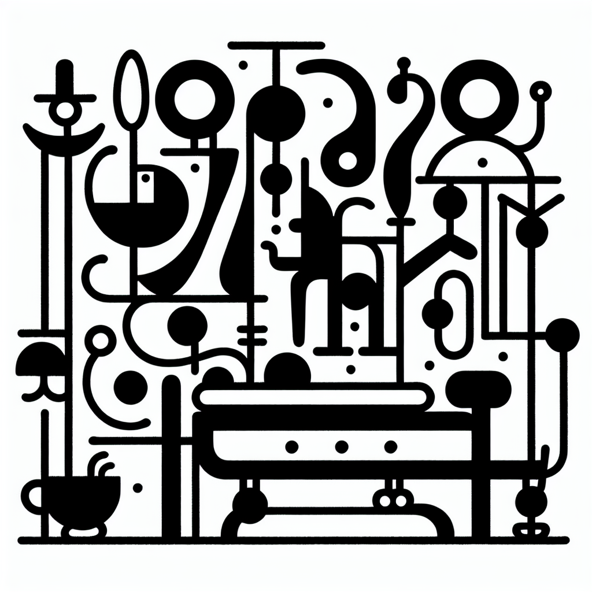

MegaPro vs Reformer Pilates : quelles différences ?
MegaPro vs Reformer Pilates : quelles différences ?
Le bien-être physique est à la mode, mais dans le vaste océan des méthodes de remise en forme, deux pratiques émergent avec une popularité croissante : le MegaPro et le Reformer Pilates. À Anglet, chez DOZ, nous abritons fièrement le premier Studio Lagree de la région, offrant une approche unique au renforcement musculaire grâce à nos machines MegaPro. Mais en quoi cela diffère-t-il du traditionnel Reformer Pilates que beaucoup connaissent déjà ? Plongeons dans ce comparatif fascinant.
1. Des machines innovantes : MegaPro et Reformer
Une des premières différences visibles entre le MegaPro et le Reformer Pilates réside dans les machines elles-mêmes. Bien qu'elles partagent une apparence similaire, leurs fonctionnalités et approches varient sensiblement.
- MegaPro : Inspirée par la méthode Lagree, cette machine est un instrument de précision pour un entraînement haute intensité. La conception est faite pour rendre chaque mouvement fluide mais exigeant, axé sur une durabilité musculaire sans impact.
- Reformer Pilates : Historiquement, le Reformer est l'un des principaux équipements utilisés dans la méthode Pilates, favorisant un alignement parfait du corps, la souplesse et la force via des mouvements doux et contrôlés.
Chez DOZ, le choix du MegaPro correspond à notre vision : un effort concentré et intense pour des résultats visibles, respectant notre philosophie 'Instant Brut'.
2. Objectifs et bénéfices : Tailor-Made Fitness
Le MegaPro et le Reformer Pilates partagent des objectifs de fitness similaires, mais leurs méthodes et bénéfices distinctifs pourraient mieux convenir selon vos besoins personnels.
À DOZ, nous valorisons la diversité des pratiques de fitness. Cela permet à chacun de personnaliser son parcours tout en profitant de notre atmosphère unique.
3. Expérience de l'entraînement : Intensité vs Fluidité
La méthode Lagree utilise le MegaPro pour offrir un entraînement intense mais sans impact, un contraste avec l'expérience du Reformer Pilates.
- Chez DOZ, l'entraînement sur MegaPro représente :
- Une combinaison de mouvements lents, contrôlés, et des transitions rapides pour un challenge maximal.
- Un focus particulier sur l'engagement du core avec une méthode qui teste chaque muscle, chaque moment.
- Pratiquer le Reformer Pilates :
- Accentue la fluidité et la grâce à travers une série de mouvements bien orchestrés.
- Met en avant une approche zen, parfaite pour la relaxation mentale autant que physique.
C'est cette dualité, entre intensité brute et fluidité gracieuse, qui renouvelle votre passion pour le sport et vous inspire à franchir les portes de notre studio DOZ.
4. Une philosophie de vie à DOZ : L'Instant Brut
Au-delà des machines et des techniques, ce qui fait la différence, c'est l'environnement et l'esprit dans lequel vous vous entraînez. DOZ ne se contente pas de proposer des cours ; nous offrons une expérience complète.
- Le design de notre espace est brut et minimaliste, reflétant notre désir de revenir à l'essentiel : effort, qualité, réconfort.
- Le Coffee Shop, avec sa cuisine saine et locale, complète l'expérience en vous proposant un espace de recueillement et de renforcement après l'effort.
- C'est un lieu où le sport et la passion pour le café trouvent une harmonie parfaite, infusant chaque séance d'une atmosphère unique.
D'un côté, renforcez votre corps avec le MegaPro. De l'autre, savourez un café de spécialité entouré par une communauté dédiée au bien-être. Chez DOZ, vous n'êtes pas seulement en train de brûler des calories, vous êtes en train de construire un style de vie sain - un style de vie qui reflète la passion et l'énergie dynamique de la côte basque.
Conclusion : Rejoignez-Nous dans l'Aventure DOZ
Que vous soyez séduit par l'intensité du MegaPro ou la délicatesse du Reformer Pilates, DOZ vous offre un espace où ces passions convergent. Venez expérimenter par vous-même la synergie du fitness et du café. Réservez votre cours dans notre studio ou laissez-vous tenter par une pause bien-être dans notre coffee shop. Chaque visite est une chance de découvrir une nouvelle facette de vous-même.
Nous vous attendons à DOZ. Faites le premier pas vers votre métamorphose.